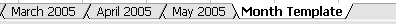 In these examples, tabs show different documents within a single application window.
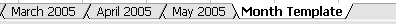 In these examples, tabs show different documents within a single application window.[!NOTE] This design guide was created for Windows 7 and has not been updated for newer versions of Windows. Much of the guidance still applies in principle, but the presentation and examples do not reflect our current design guidance.
Tabs provide a way to present related information on separate labeled pages.
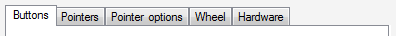
A typical set of tabs.
Tabs are usually associated with property windows (and vice versa), but tabs can be used in any type of window.
Tab controls represent the tabbed manila folders used to organize information in filing cabinets commonly found in the United States. (Manila folders aren't used worldwide.)
[!Note]
Guidelines related to layout, tab menus, dialog boxes, and property windows are presented in separate articles.
To decide, consider these questions:
Tabs have several usage patterns:
| Usage | Example |
|---|---|
| Dynamic window surface like scroll bars, tabs can be used to increase the window surface area to show related information. | With this pattern, using tabs is conceptually similar to placing all the information on the tabs linearly on a single scrollable surface, with the tab labels as headings. In this example, tabs effectively increase the window surface area. |
| Multiple views like split buttons or drop-down lists, tabs can be used to show different views of the same or related information. | 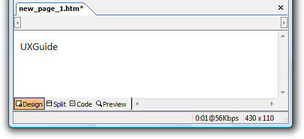 In this example, tabs change views within a document. |
| Multiple documents like multiple windows, tabs can be used to show different documents in a single window. | 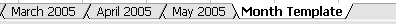 In these examples, tabs show different documents within a single application window. |
| Exclusive options like radio buttons, tabs can be used to present multiple exclusive choices. in this pattern, only the selected tab applies and all other tabs are ignored. | 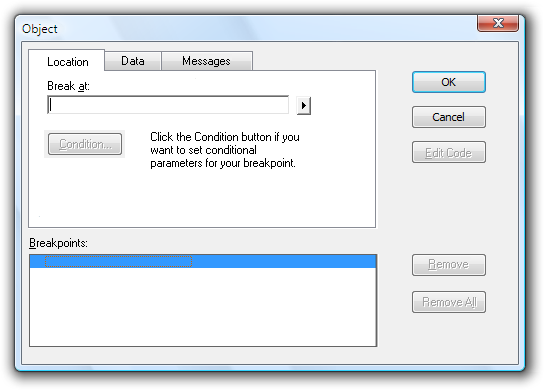 In this example, tabs are used (incorrectly) as a substitute for radio buttons. This pattern is not recommended because it uses a nonstandard behavior. The tabs behave as a setting instead of purely a way to navigate within the window. |
If you do only one thing...
Make sure the information on the tabs is related, yet settings on different pages are independent. The last tab selected should have no special meaning.
Use horizontal tabs if:
Use vertical tabs if:
The property window has eight or more tabs.
Using horizontal tabs would require more than one row.

In this example, vertical tabs accommodate eight or more tabs.
Don't nest tabs or combine horizontal tabs with vertical tabs. Instead, reduce the number of tabs, use only vertical tabs, or use another control such as a drop-down list.
Don't scroll horizontal tabs. Horizontal scrolling isn't readily discoverable. You may scroll vertical tabs, however.
Incorrect:
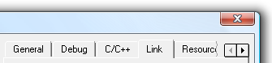
In this example, the horizontal tabs are scrolled.
For tabs on a resizable window or pane, put a scrollbar, when needed, on the page, not the window or pane. The tabs should always be visible and not scroll out of view.
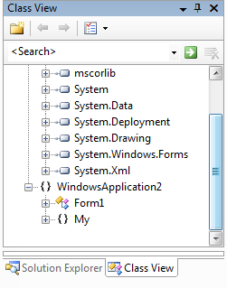
In this example, the tab page has the scrollbar, not the pane.
Make sure the tabs look like tabs and not another type of control.
Incorrect:

In this example, these tabs look like command buttons.
Don't put icons on tabs. Icons usually add unnecessary visual clutter, consume screen space, and often don't improve user comprehension. Only add icons that aid in comprehension, such as standard symbols.
Incorrect:
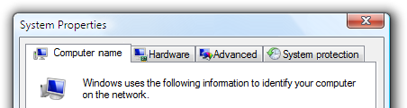
In this example, the icons add visual clutter and do little to improve user comprehension.
Exception: You can use clearly recognizable icons if there might be insufficient space to display meaningful labels:
Correct:
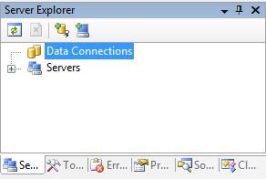
In this example, the window is so narrow that icons better communicate the tabs than the labels.
Don't use product logos for tab graphics. Tabs aren't for branding.
Don't use scroll bars on tab pages. Tabs function similarly to scroll bars to increase the effective area of a window. One mechanism should be sufficient.
Use concise tab labels. Use one or two words that clearly describe the content of the page. Longer labels consume screen space, especially when the labels are localized.
Use specific, meaningful tab labels. Avoid generic tab labels that could apply to any tab, such as General, Advanced, or Settings.
If a tab doesn't apply to the current context and users don't expect it to, remove it. Doing so simplifies the UI and users won't miss it.
Incorrect:
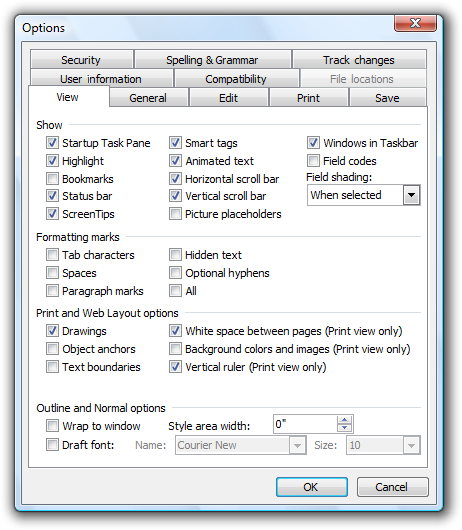
In this example, the File Locations tab is incorrectly disabled when Microsoft Word is used as an e-mail editor. Rather than disabling this tab, it should be removed because users wouldn't expect to view or change file locations in this context.
If a tab doesn't apply to the current context and users might expect it to:
Don't disable the tab, because doing so isn't self-explanatory and prohibits exploration. Users looking for a specific value would be forced to look on all other tabs.
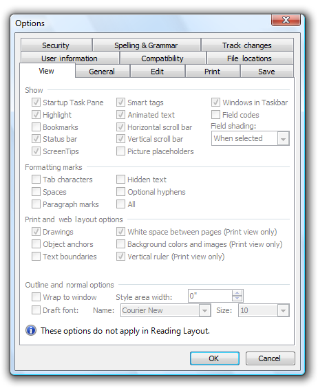
In this example, none of the View options apply in Reading Layout. However, users might expect them to apply based on the tab label, so the page is displayed but the options are disabled.
Don't use this pattern! Use radio buttons or a drop-down list instead.
Incorrect:
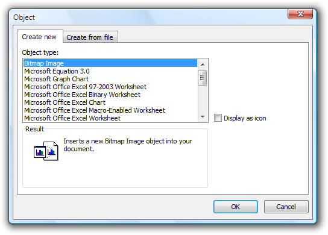
In this example, tabs are incorrectly used as a substitute for radio buttons.
Correct:
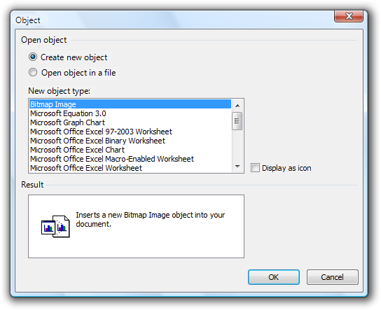
In this example, radio buttons are correctly used instead.
When referring to tabs:
Example: On the Tools menu, click Options, and then click the View tab.